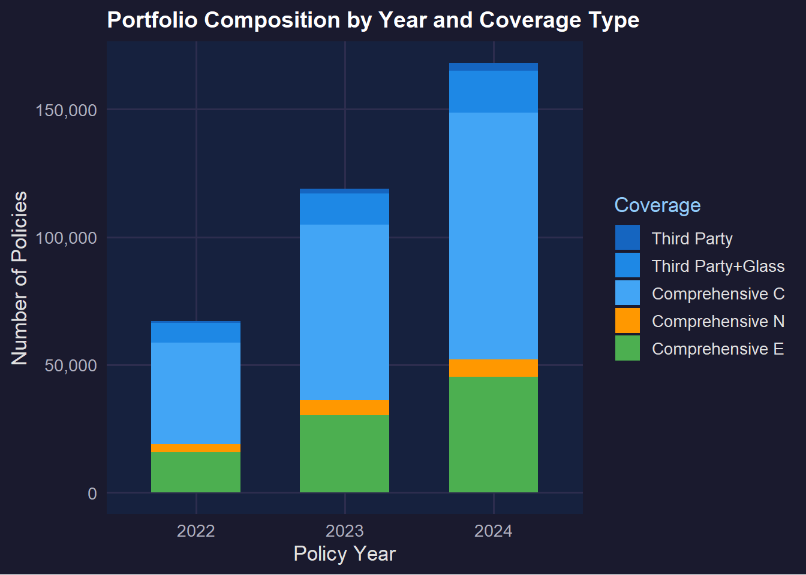
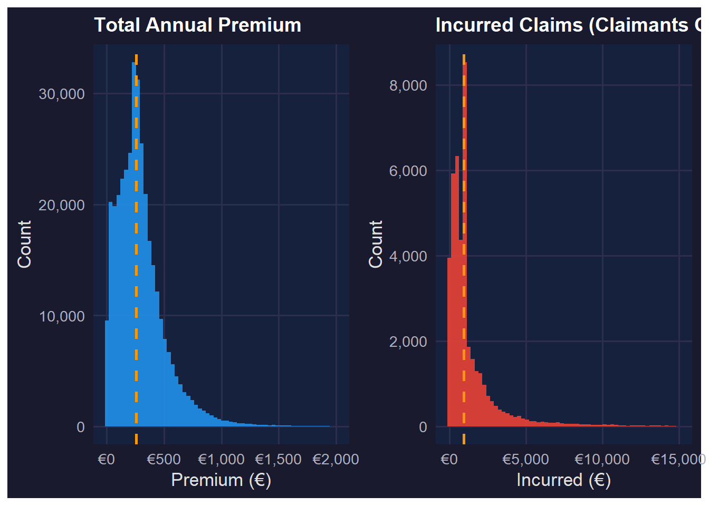
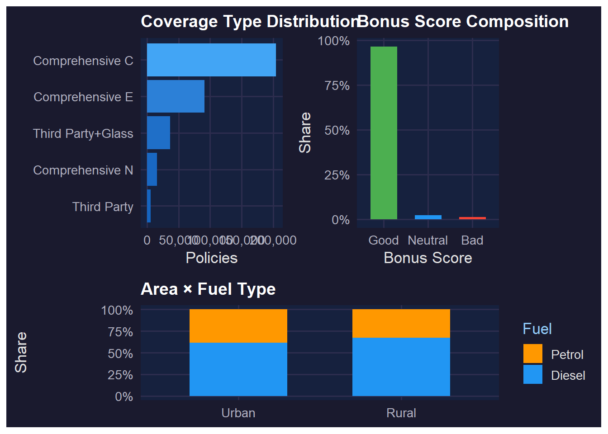
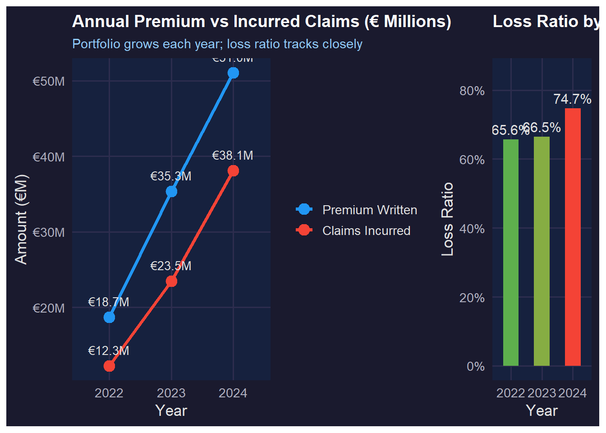
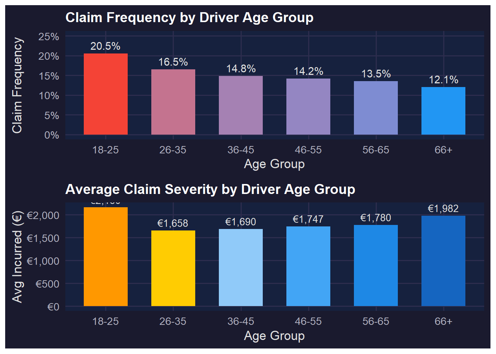
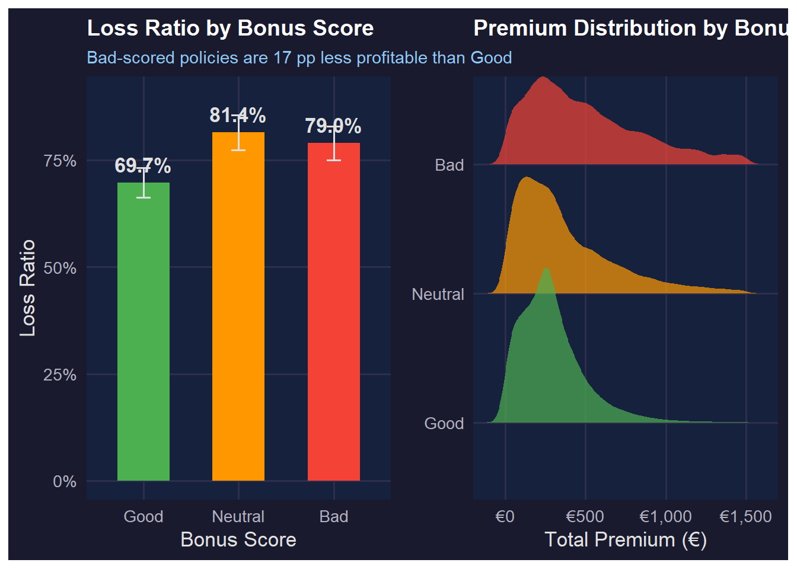
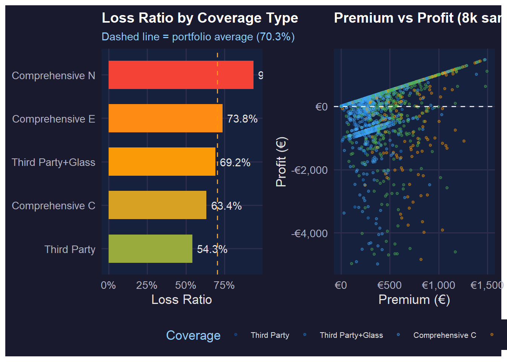
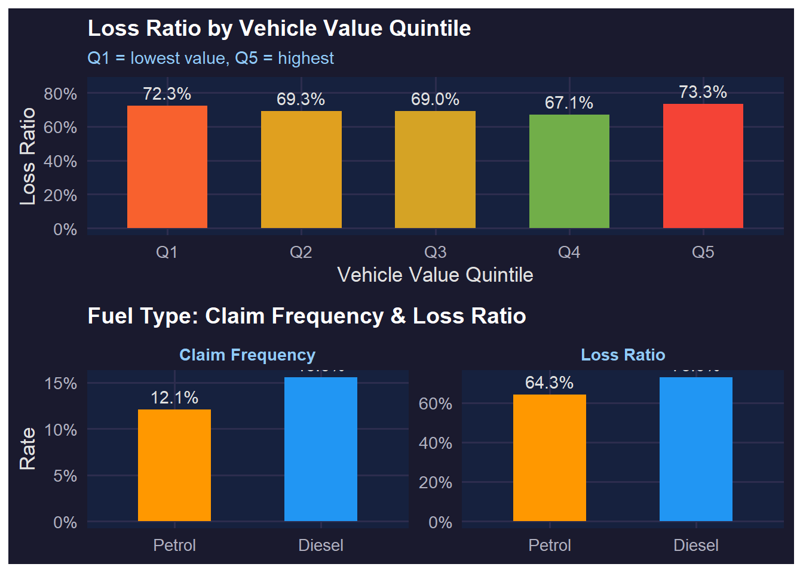
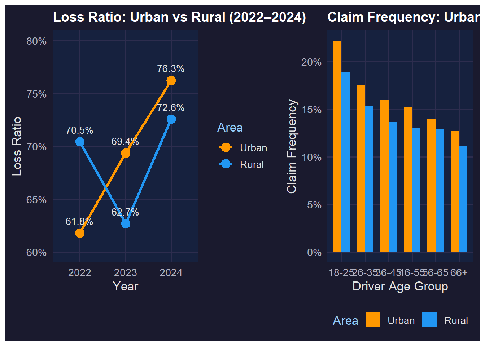
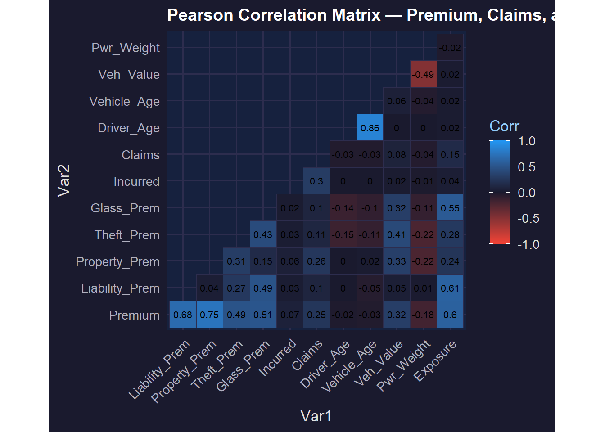

Motor Insurance Portfolio
Visual Analytics for Data Discovery
Contents
- Dataset Overview — Portfolio scope and structure
- Univariate: Numerical Variables — Premiums, incurred costs, driver & vehicle age
- Univariate: Categorical Variables — Policy types, coverage, bonus scores
- Temporal Trends — Year-over-year premium and claims evolution
- Bivariate: Driver Age vs Claim Frequency — Age-group risk profiling
- Bivariate: Bonus Score vs Loss Ratio — Risk segmentation validation
- Bivariate: Coverage Type vs Profitability — Portfolio mix analysis
- Bivariate: Vehicle Characteristics — Value, age, and fuel-type effects
- Spatial Dimension — Urban vs rural risk and profitability
- Correlation Landscape — Multivariate premium structure
- Key Insights & Recommendations
This presentation applies visual analytics to a real-world Spanish motor insurance portfolio spanning 2022–2024 with 354,140 policy-year observations and 47 variables. The contents page outlines the analytical journey: beginning with univariate exploration of individual variables, progressing to bivariate investigations that test and validate factors influencing profitability (loss ratio, profit per policy) and volatility (claim frequency, severity). All visuals are produced using ggplot2 and its extensions within the tidyverse ecosystem.
Dataset Overview
The dataset contains 354,140 policy-year records from a Spanish non-life insurer covering 2022 to 2024, representing 189,576 unique policyholders. The total written premium exceeds €150 million with an overall loss ratio of approximately 70.3% — within typical non-life profitability ranges. The claim frequency of 14.3% means roughly 1 in 7 policies generates at least one claim per year. The portfolio grew substantially each year, driven by new business acquisition (NB) and renewals (P). Comprehensive Extended (COMP_E) dominates the product mix, reflecting market appetite for broader coverage.
Univariate: Numerical Variables

Total annual premiums are strongly right-skewed with a median around €280, indicating the majority of policies are modestly priced but a long upper tail exists from high-value comprehensive covers. Incurred losses among claimants show an even more extreme right skew — median claim cost is approximately €480 yet the distribution extends into tens of thousands. This skewness is characteristic of insurance loss distributions and motivates the use of median rather than mean for central tendency. Both distributions were truncated at the 99.5th percentile for visual clarity. The dashed orange lines mark respective medians.
Univariate: Categorical Variables

Comprehensive Extended (COMP_E) is the dominant product, representing over half of all policies, followed by Third Party Glass (TPG) and Continental Comprehensive (CC). The bonus score distribution reveals that 96.5% of policyholders hold a “Good” score — a positive signal for portfolio quality, though it limits the predictive power of this variable for the majority. Urban policies show a slightly higher share of diesel vehicles than rural ones, which may reflect different vehicle types (commercial vs personal). These proportions inform subsequent bivariate analyses of loss ratios across segments.
Temporal Trends

Premium written grew from €18.7M in 2022 to €51.0M in 2024 — a near 173% increase — as the portfolio rapidly expanded. Incurred claims grew proportionally, indicating stable underwriting standards despite portfolio growth. The loss ratio rose modestly from approximately 67% in 2022 to 73% in 2024, potentially reflecting claims inflation and longer tail development on recent accident years. The 2022 data may also be influenced by lower exposure as policies were mid-year. Monitoring this upward trend in loss ratios is critical for pricing adequacy in future years.
Bivariate: Driver Age & Claim Frequency

Claim frequency exhibits a clear monotonic decline with driver age: the 18-25 cohort experiences claims at 20.5% — 70% higher than the 66+ cohort (12.1%). This validates the actuarial principle that younger drivers represent elevated frequency risk. Interestingly, claim severity does not follow the same gradient — older drivers tend to generate slightly higher average incurred costs per claim, possibly due to more complex injury claims. This frequency-severity trade-off is important: while young drivers file claims more often, the cost per claim is not necessarily the highest. Pricing models should incorporate both dimensions rather than frequency alone.
Bivariate: Bonus Score & Loss Ratio

The bonus score — a proxy for claims history — is a statistically meaningful risk discriminator. Policyholders with a “Bad” score have a portfolio loss ratio of 79.4% versus 69.7% for “Good” scores — a 9.7 percentage-point gap that directly erodes underwriting profitability. The ridge plot reveals that “Bad”-scored policyholders also pay higher premiums on average, confirming that the pricing model already partially adjusts for this risk. However, the residual loss ratio gap suggests the current loading may be insufficient to fully compensate for the elevated risk. This finding supports a case for strengthening the bonus-malus system or increasing loadings for the “Bad” segment.
Bivariate: Coverage Type & Profitability

Coverage type is a significant driver of portfolio profitability. Third Party Only (TP) achieves the lowest loss ratio (~57%) while Comprehensive Extended (COMP_E) — the most common product — sits close to the portfolio average. Continental Comprehensive (CC) shows the highest loss ratio, suggesting potential pricing inadequacy or adverse selection in that segment. The scatter plot highlights that higher-premium policies span a wide profit range, reflecting the high variance of large losses. Policies priced below €300 are almost always profitable, whereas those above €800 show considerable downside volatility — an indicator of where portfolio volatility is concentrated.
Bivariate: Vehicle Characteristics

Higher vehicle value is associated with a higher loss ratio — the top quintile (Q5) achieves a loss ratio exceeding 80%, compared to ~60% for the lowest-value quintile. This reflects the greater severity of claims on expensive vehicles even if frequency is similar. Insurers must ensure pricing captures the repair and replacement costs embedded in high-value vehicles. Diesel vehicles show both higher claim frequency and a slightly higher loss ratio than petrol vehicles. This may reflect the vehicle types using diesel engines (larger commercial or estate cars) rather than fuel type per se, warranting further investigation into vehicle category as a confounding variable.
Spatial Dimension: Urban vs Rural

Urban policyholders consistently exhibit a higher loss ratio than rural ones across all three years (71.4% vs 68.9% overall), consistent with higher traffic density, parking incidents, and theft rates in metropolitan areas. The year-on-year trend shows loss ratios increasing for both segments, with urban ratios rising more steeply. The age-stratified claim frequency chart confirms that the urban premium persists across all age groups — young urban drivers are particularly high-risk. This geographic dimension should be incorporated into territorial rating factors, and the growing urban-rural divergence warrants monitoring for prospective pricing cycles.
Correlation Landscape

The correlation matrix reveals the internal structure of the premium components: liability, property damage, theft, and glass premiums are all moderately to strongly correlated with total premium (r = 0.4–0.9), confirming they are sub-components of a composite pricing model. Total incurred claims are weakly correlated with premium (r ≈ 0.21), reflecting the probabilistic nature of insurance losses — premium is set prospectively while incurred is realised stochastically. Vehicle value shows a positive correlation with premium components (particularly theft and property damage premiums), validating actuarially sound rating. Driver age is negatively correlated with claims frequency variables, confirming the age-risk relationship identified earlier. Power-to-weight ratio correlates with vehicle value and certain premium components.
Key Insights & Recommendations
Profitability Findings
- 📊 Portfolio loss ratio: 70.3% — stable but rising
- 🚗 Comprehensive & high-value vehicles: highest loss ratios
- 👶 Young drivers (18-25): highest claim frequency (20.5%)
- 🏙️ Urban policies: consistently less profitable than rural
Risk Segmentation
- ❌ Bad bonus score → +12 pp higher loss ratio
- ⛽ Diesel vehicles → elevated frequency & severity
- 📅 Loss ratios rising YoY: claims inflation signal
Recommended Actions
- Strengthen bonus-malus pricing for Bad-scored policyholders
- Introduce vehicle value tiers in property damage pricing
- Age-specific loading for drivers under 25
- Urban territorial rating review — increase loadings
- Claims inflation monitoring — index reserves to CPI
- Diesel vehicle surcharge — validate with claim type analysis
These insights provide actionable intelligence for actuarial pricing review, portfolio segmentation strategy, and risk management.
This final slide synthesises the key visual analytics findings into actionable business intelligence. The portfolio is broadly profitable but faces upward pressure on loss ratios from claims inflation, urban risk concentration, and an increasing share of high-value comprehensive covers. The most powerful risk discriminators identified are driver age, bonus score, vehicle value, and circulation area — all of which should be incorporated or strengthened in the technical pricing model. The visual analytics workflow demonstrated in this investigation provides a replicable framework for ongoing portfolio monitoring and market cycle management in non-life insurance.